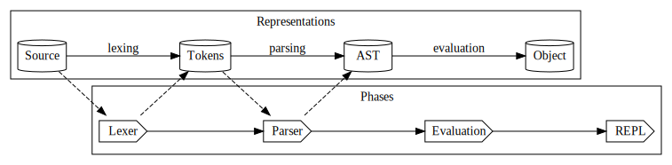
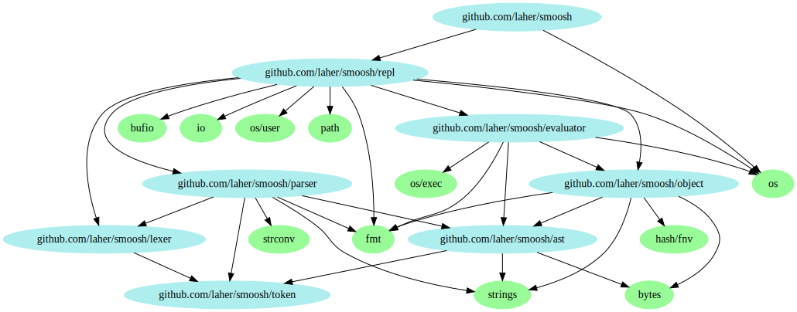

Smoosh
Table of Contents
1 Overview
Monkey is the language used in a book called 'Writing an interpreter in Go'.
Please read the book. It's amazingly clear, and good fun.
The language itself is amazing because it's written entirely using Go's standard library, it's easy to understand and yet it has some advanced language features (e.g. closures). Note that it's still a toy though - e.g. weak error-handling and some fundamental features are missing.
Note that it's not necessary to be an expert on compilers to enjoy this book. I've never studied compilers, I enjoy learning-by-doing, and I believe that this learning goal is acheivable with good resources. That's kind of the point of this talk.
The book itself is copyrighted but the code is MIT licensed, so I'm going to base my talk on the Monkey code and my changes to it.
- I'll talk about the high-level building blocks of an interpreter.
- I'll try to explain what problem Smoosh is trying to solve.
- Review some Smoosh code, to help illustrate the different parts of the system.
- Hopefully, add a feature with some live coding
Along the way I'll try to show what Go gives us to help make this all kinda easy.
2 Interpeter vs compiler; what's a shell?
2.1 Compiler vs interpreter
- An interpreter directly executes instructions rather than compiling them to machine code in advance.
- Some platforms offer an interpreter AND a compiler (
go run, anyone?) - the difference is a bit blurry. - Several varieties of interpreter. We'll just look at the style used in Monkey.
- Monkey executes precompiled code using an intermediate representation called an AST - ASTs are more often used in Compiled languages, e.g. Go itself
2.2 What's a shell
- Shells are varied and broad in scope
- For this talk, let's define a shell as:
- A shell is fundamentally an interpeter which is convenient for chaining executables together in a pipeline
- A shell only needs a basic type system:
- Strings, numbers, bools, maps, arrays
- (i.e. no User-Defined types)
- I/O streams
- First-class support for I/O pipelines
2.3 What's the problem?
- Programming languages are great for defining business logic, but a little inconvenient as a pipeline for shell-like pipelines
- Shells can be awkward for defining business logic. If statements are tricky, functions are limited, data types are limited
2.4 Solution?
- Smoosh is an early-stage prototype for a programmer's shell
- Attempting to make a language which is convenient for writing shell scripts (piping commands together) and also programming
- More focused on shell scripts than an interactive shell, but still provides an interactive REPL
- A bit like Go:
- Easy to read
- Small and easy to grok
- Type checking w type inference
- gofmt for consistency
- Closures and functions
- Rich standard library
3 Our Interpreter: Smoosh
Smoosh is basically the same as Monkey in terms of structure and approach to interpreting code.
3.1 flow diagram

3.2 Packages
This diagram generated by 'godepgraph' shows the simplicity of the Monkey/Smoosh interpreter

3.3 Smoosh on github
https://github.com/laher/smoosh
See README for project status
4 Monkey vs Go compiler
Monkey/Smoosh is similar to the Go compiler up to a point.
- The Go compiler first tokenizes code
- The Go compiler is written in Go too!
- The Go compiler constructs an AST.
- BUT, the go compiler generates machine code, it has a formal grammar (goyacc), it uses an intermediate form called SSA, and runs various optimisations.
- https://github.com/golang/go/blob/master/src/cmd/compile/README.md
- old compiler (gccgo)

- AST: https://arslan.io/2017/09/14/the-ultimate-guide-to-writing-a-go-tool/
- SSA: https://about.sourcegraph.com/go/generating-better-machine-code-with-ssa/
5 Phases of the interpreter
5.1 Tokenizing
- 'Lexical analysis' (lexing) / Tokenizing is the first stage of modern compiler processing.
- Typically you pass through the source once.
- the result is an ordered list of 'tokens' without any structure.
- e.g. it doesn't verify that an 'if … {' has a matching '}'.
- See token.go and lexer.go
5.2 Parsing
- Parsing is the component which defines a structured representation of the code.
- Monkey represents structure as an Abstract Syntax Tree
- The strategy used is called a Recursive Descent Parser, specifically a Pratt Parser.
- Parsers are often automatically generated from declarative markup, using a 'parser generator' - see yacc, bison, antlr, goyacc
- Parser generators are really useful for completeness, correctness, and treating edge cases, but you don't learn as much. Therefore -> we code this parser manually.
- AST: hierarchy is defined as infix and postfix expressions
- See ast.goand parser.go
5.3 Evaluation
- Processes AST statements and expressions
- Monkey/Smoosh stores state in 'Environment' maps
- Executes precompiled code
- Harnesses Go's garbage collector
- See evaluator.go, builtins.go
- For runtime state representation, see object.go and environment.go
5.4 Runner
- Monkey offers a REPL for each phase during each chapter.
- I've combined them so you can observe the output of each phase using different options
- I also added a second mode of operation - a 'file runner'
- See runner.go
6 Tooling
- REPL flavours
- Formatting code
- End-to-end testing
7 Code samples
Let's cover at least 3 of these
- Adding a new token - E.g. one-line comments
- Add a builtin function, e.g.
cd - Adding 'piping'
- Adding type-checking -
let->var(like go); check existing Objects during eval - Adding some syntax - 'for-range loops'
- Building a standard library akin to Go's stdlib
- Unicode support
8 Add features?
If we have time, let's try some live-coding of Smoosh
8.1 Write some end-to-end tests
- One good, one bad.
- Make them pass
8.2 Examples to choose from
- A new stdlib function
- Backticks for some more concise command invocation
- Handling exit codes
- Floats